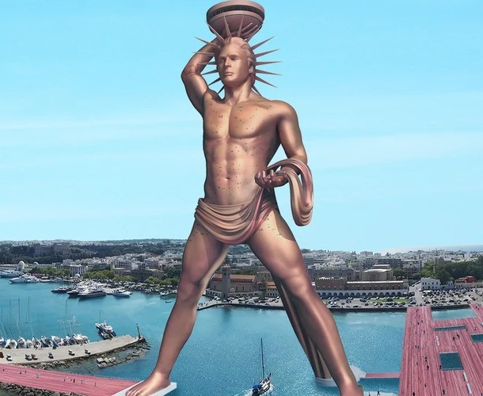

7 Cudów Świata - Kolos Rodyjski
Piramida Cheopsa
Wiszące ogrody Semiramidy
Świątynia Artemidy w Efezie
Posąg Zeusa w Olimpii
Mauzoleum w Halikarnasie
Kolos Rodyjski
Latarnia morska na Faros
Konstrukcja Kolosa
Posąg był zbudowany z brązowych płyt nakładanych na wewnętrzny stalowy szkielet. Poszczególne części łączono metalowymi bolcami, a wnętrze wypełniono cegłą i kamieniem dla stabilności. Helios przedstawiony był w pozycji stojącej, z jedną ręką wyciągniętą ku niebu. Konstrukcja musiała być wyjątkowo wytrzymała, aby utrzymać tak ogromną masę brązu i wytrzymać wiatr. Całość była symbolem potęgi, ochrony i dumy mieszkańców Rodos.
Rodos
Zdjęcie Kolosa

Dowiedz się więcej!
Kliknij by poczytać o Kolosie Rodyjskim (link otwiera się w drugiej karcie)
Ankieta
Czy widziałeś kiedyś Kolos Rodyjski?
tak
nie
Jak oceniasz Kolosa Rodyjskiego?
⭐⭐⭐⭐⭐
⭐⭐⭐⭐
⭐⭐⭐
⭐⭐
⭐
Co Cię najbardziej fascynuje w Kolosie? (wybór wielokrotny)
Architektura
Historia
Tajemnice
Inne
Wyślij ankietę
Wyczyść
powrót na górę
powrót do strony głównej